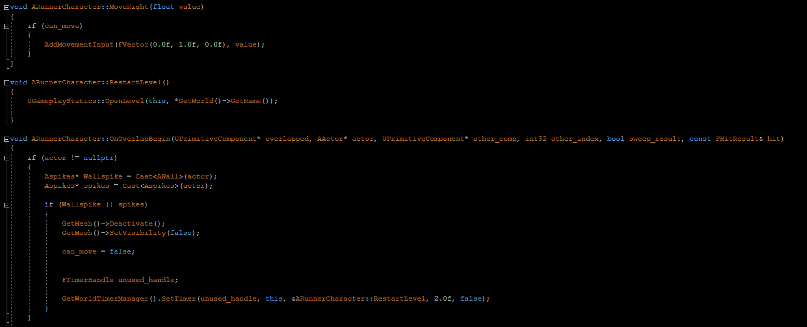

A hyper casual game
Made in 1 day
I was tasked with making a hyper causal game in Unreal Engine in a day by Mastered bootcamp.
Everything from generating ideas to making the game, and so I created a runner game with
random generation for the obstacles, a simple time based score system, a reset/fail state,
and some environmental objects. Some tweaks to the trampoline object and texturing and the
particles were added later as well, and completing the most fundamental game loop for the game.
Engine
The Engine used was Unreal v4.27, and the project was set up making use of C++ code and blueprints. The character derived from Unreal's in-built character class setting the properties for movement as well as level reset and collisions. A base class for levels was also created in C++, with functions for binding two triggers that could be called from blueprints. These triggers were bound to two box components to represent spawn and player detection locations in the blueprint which could then be shared with children objects to create a variety of levels to spawn in from an array.
A level spawner and obstacles were created in C++ deriving from Unreal's Actor class as to be placed into the world.
Code
The setter code for the level triggers and their spawn locations, to be set through blueprints.
The code for spawning levels when running through the trigger box and despawning levels within the list to manage the level sections loaded in.
This code is to spawn a randomly selected level from the available list as the next segment and place it at the spawn location.
This code defines the collision behaviour on the player as well as the restart function for when the player dies. 
To Itch →